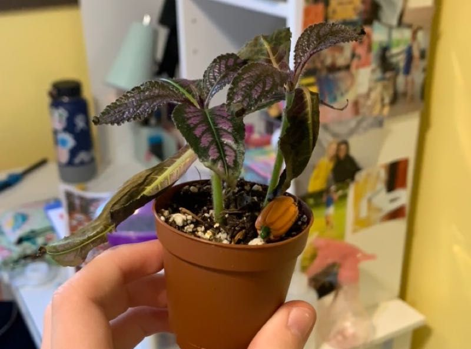

शुष्क हवा
आप क्या देख रहे हैं: पत्तियों के सिरे/किनारे सूखना, पत्तियाँ मुड़ना/लटकना, कली गिरना—अक्सर सर्दियों या हीटर/एसी के पास।
यह क्या है (विवरण): कमरे की आर्द्रता कम होने पर (आमतौर पर 30–40% से नीचे) पत्तियाँ तेज़ी से नमी खोती हैं।
समस्या या प्राकृतिक? नियंत्रित की जा सकने वाली पर्यावरणीय समस्या।
कैसे पक्का करें:
- हाइग्रोमीटर हो तो देखें: 45–60% सामान्यतः आरामदायक।
- एक ही कमरे के कई पौधों पर समान सूखे सिरे—हवा शुष्क होने का संकेत।
क्या करें (स्टेप-बाय-स्टेप):
1) पौधों को समूह में रखें—आस-पास की नमी थोड़ी बढ़ती है।
2) कंकड़-ट्रे: ट्रे में कंकड़+पानी; गमला कंकड़ों पर रखें (पानी में डूबा नहीं)।
3) ह्यूमिडिफ़ायर चलाएँ: 45–60% लक्ष्य रखें; रात में 40–50% भी ठीक।
4) सीधी हवा/हीट से 1–2 मीटर दूरी; पर्दे से धूप फिल्टर करें।
5) सिंचाई गहरी पर अंतराल उचित रखें; हल्का जैविक मल्च नमी टिकाएगा।
6) सूखे सिरों को ट्रिम कर सकते हैं—हरे भाग को न काटें; नई पत्तियाँ सामान्य होंगी।
क्या न करें: लगातार पत्ती-स्प्रे को मुख्य समाधान न मानें—दाग/फफूँद का जोखिम।
रोकथाम: मौसम बदलते ही नमी/रोशनी समायोजित करें; नमी-प्रिय प्रजातियाँ घर के नम हिस्सों में रखें।
छवियां
